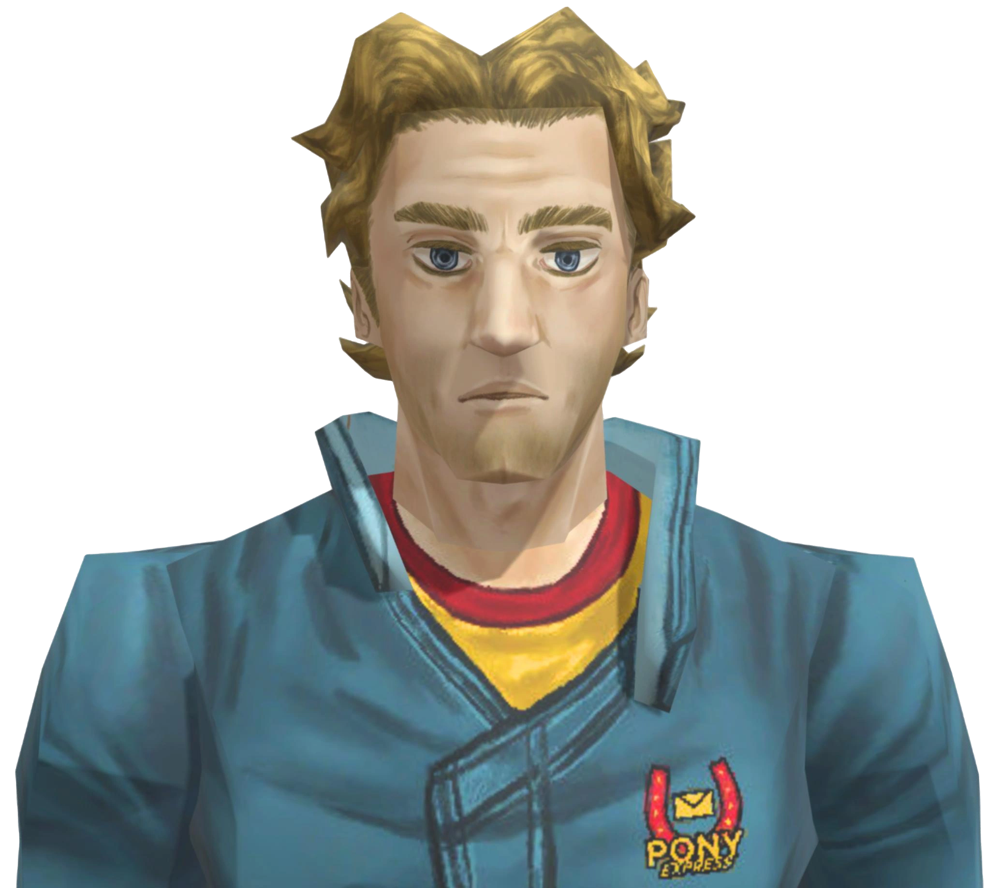

Swansea
Description: Swansea often appears as a grumpy, old man. Initially, he doesn't care for his intern Daisuke, whom he often finds to be more of a nuisance than anything else. He continuously blocks off the path to the utility room claiming that it's filled to the brim with foam, which turned out to be a lie as he was trying to hide the only working cryostasis pod from the other crew members. Although he has a very tough exterior and had treated Daisuke rudely, it's likely he was hiding the pod in the hope that Daisuke could use it.
Anya
Description: Anya is a kind, intelligent, determined young woman who has a passion for nursing and a sense of humor. Despite having been through medical school 8 times and failing, she continues to go, showing her love and determination for medicine. Before her assault, she was seemingly much more lively, getting along well with and trusting the rest of the crew which likely included Jimmy. She is knowledgeable about the company guidelines and rules, as she brought up the safety manual of Pony Express to find a way to reach the cargo. Reserved and easily nervous after her assault, she has a soft-spoken demeanor and acts meek around the rest of the crew, seeking to avoid Jimmy and protect herself from him. Also hiding the gun case in the medical room so that Jimmy can't find it, fearing for the worst. Post crash, her mental health declines rapidly as Jimmy declares himself captain. She is prone to breakdowns, experiences anxiety, and tends to isolate herself more often than not taking care of Curly. Anya barely speaks for the rest of the game, especially when talking to Jimmy. She seems to have a sense of humor from the yimpy sticky note she pinned, her playful teasing of Swansea enjoying the Pony Express cake, and a competitive streak in board games. She is also mentioned to have been reading a lot of books about psychology while on the Tulpar.

Daisuke
Desciption: Daisuke might be the most optimistic crew member. He is almost always enthusiastic and excited about things happening around the ship: the mentee seems to have felt like he was doing his part just with the menial task of taking stock of the kitchen four times over, as ordered by an exasperated Swansea. Even after the crash, he tries to keep his spirit up. However, despite his peppy exterior, Daisuke later in the game drunkenly confesses to Jimmy that he struggles to find meaning in life.

Curly
Description: Curly's personality can be described as dependable. He is a promising and ambitious man with a big future ahead of him. Over time, he grows discontent with his position, wondering if the captain is "all he'll ever be." He reflects on having chosen the wrong career path. Still, he cares about his friends and crewmates, not wishing to leave them behind. Respected and beloved on his ship, Curly is called a "great captain" by his co-workers. He has personal conflicts with his friend and co-pilot, Jimmy, who both admires Curly and envies him. He is responsible yet lenient, and his efforts to see the best in everyone leads to his overlooking conflicts on the ship. He tends to ignore inconvenient details to focus on the bigger picture, both symbolically when he cannot see the dead pixel on the monitor in the lounge and literally when he does nothing about Jimmy after learning he assaulted Anya.
Jimmy
Desciption: Jimmy is shown to both experience some semblance of guilt for some of his actions while also being intentionally manipulative and spiteful. It was mentioned that he has struggled with life back on earth and likely sought for a life of control, hence why he felt comfortable as the co-pilot. However, he felt as though he had been climbing the ladder while Curly was already at the top. Throughout the game, he attempts to take responsibility and fix things, while not recognising that his own actions are the reason why the crew is even in this position. He often repeats other people's words without understanding their meaning and applies them to himself to excuse the things he's done. He is very unreliable as a narrator. Jimmy is very envious of Curly's position as a captain pre-crash, wishing to gain the same amount of power as him, and not recognizing how many responsibilities and tasks a captain has. He acts impulsively and without thinking, such as crashing the ship and regretting it right after, which ultimately left Curly severely injured and incapacitated as captain. He lied to the crew and blamed Curly for the crash so he wouldn't have to deal with the consequences. As captain, he quickly got overwhelmed and berated other members of the crew, primarily Anya when she asked him to help with the painkillers. Eventually he recognizes that he's not built to be a captain and Curly should've stayed as that all along. He also takes advantage of all the crew members in some way. He convinces Daisuke to climb into the damaged vent by telling him that Swansea would be proud of him, despite Swansea's warnings that it would be dangerous. When Daisuke was injured, Jimmy tries to use the mouthwash as a disinfectant despite Anya's warning that it had too much sugar to be effective. Jimmy insults Swansea for killing Daisuke even though he was in tremendous pain and wouldn't have been able to survive the wounds. Jimmy often quickly jumps to conclusions, assuming the worst in people. He yells at Curly during the birthday party for wanting to leave everyone behind, or when Swansea mercy killed Daisuke. He also projects his own traits and insecurities on others, such as when he assumed Swansea wanted to keep the pod for himself. Jimmy's hallucinations represent the guilt and the true thought patterns he has. Anya herself never shows up, but the baby that he had caused is often treated as a mistake that he needs to get rid of. Daisuke is shown the most in his hallucinations in the form of a flower, while he often saw himself as defending or hiding from Swansea. He also chose to not take the Pony Express mandated psych evaluations serious, stating that he experiences sexual attraction to a cartoon horse. In Anya's words, Jimmy thinks that they're a waste of time.